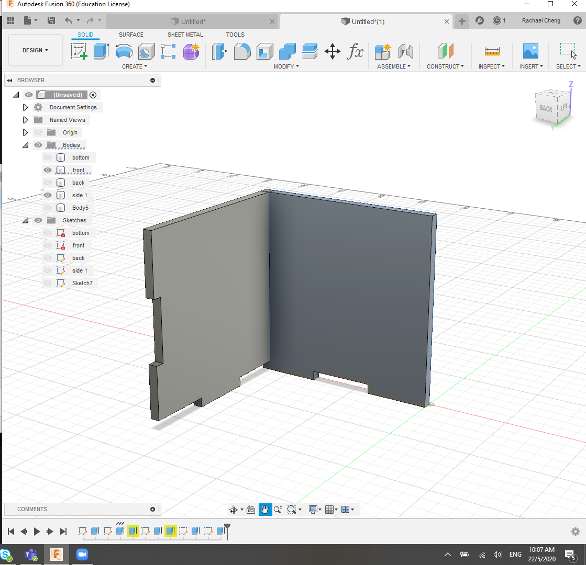
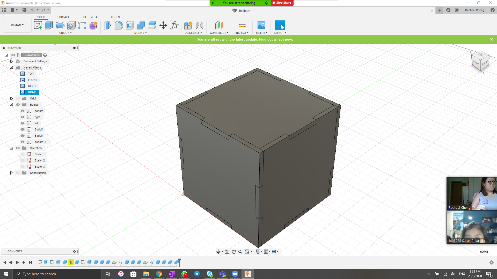
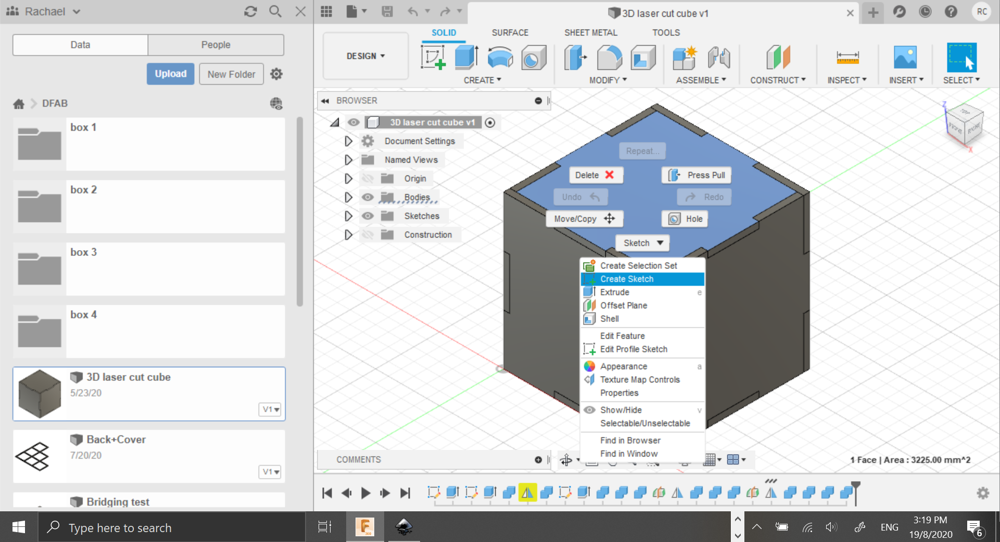
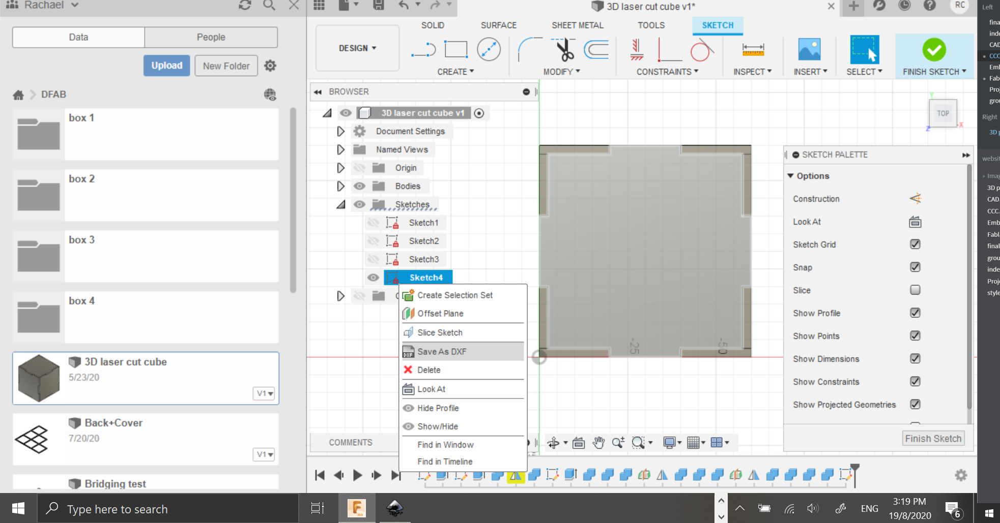
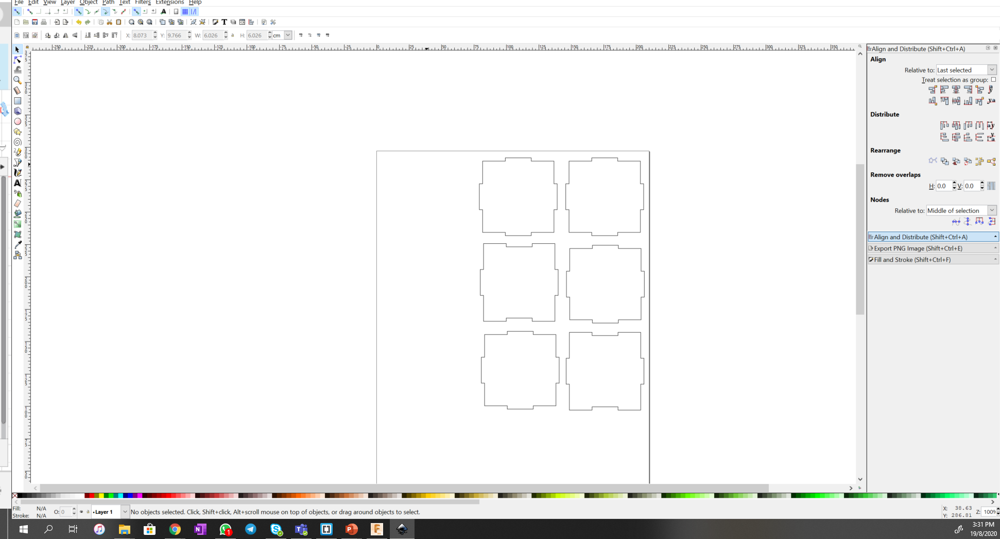
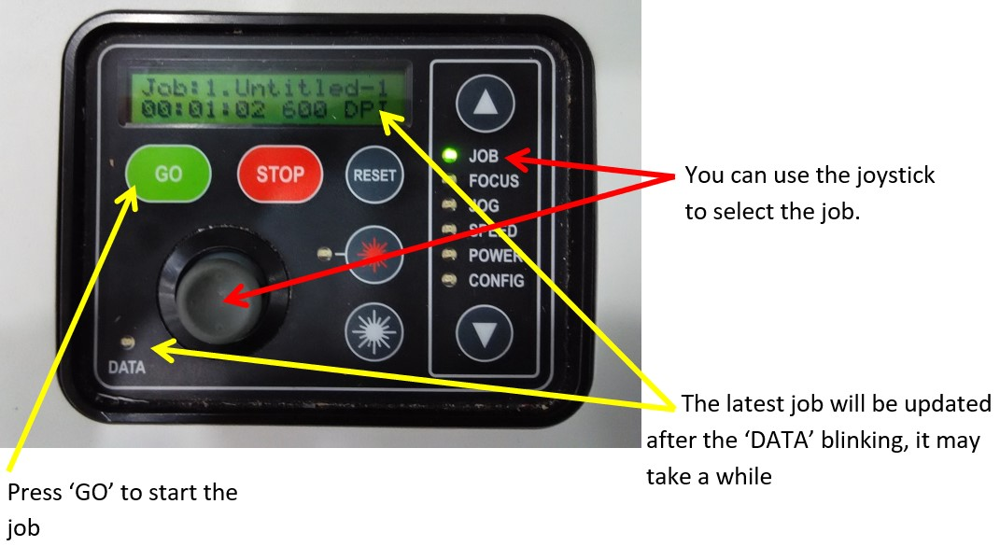

Laser Cutting
The laser cutting machine that we have in SP is an Epilog Fusion.

Colours
There are two main colours to take note of when laser cutting.
Red Is used for cutting
Green Is used for engraving
Process
Before laser cutting, we must first prepare the files/ design that we want to cut out. We can design the things we want on Fusion360 then save the sketch as a .DXF file as the laser cuttter reads dxf files (similar to #D printer with .gcode)
For our assignment, we were tasked with making a box then laser cutting it and it should hold without any glue or tape. I did not have time to cut out the box however did design and place in a file. I did use this method for my final project.
First I drew out a 3D version of my box (using fusion360). The edges were jaged so that the individual faces would be able to join with each other similar to a jig-saw puzzle, hence does not need glue or tape to stay together.
 Once the whole design is drawn out, click on the face which you want to cut out and create a sketch
After a sketch is created, save it as a DXF file
Once all the files are saved as DXF, import it into corel draw (in school). However I dont have corell draw installed on my laptop so I imported it into Inkscape.
After this step, which is done on the computer which is linked to the laser cutter in school, I would change the colour of the line to RGB Red if I am cutting it out or RGB Green if I am engraving. For the box I will use RGB Red as I want to cut of the faces instead of engrave them.
I did not manage to take any pictures of the process when I was using the laser cutter in school. Whoops :( so I will describe it to my best ability
Once the colours are set, proceed to click "print" and the file will be brought into another sofeware that is linked to the printer. The software or method may be different depending on which laser cutter you are using, T11C and T144 have different laser cutters hence are slightly different after importing the files onto corell draw, No worries tho, if unsure make sure to ask TSO before proceeding
Before cutting, check the setting!!! Always make sure that the material is selected properly as well as the print speed and strength. It is often placed right beside the laser cutting machine. Also make sure to >turn on the machine, exhaust and compressor before proceeding to cut out your items.
When drawing out materials to cut, look through the recycled pile before taking new material. If new material is needed make sure to fill in the google form before using it. The common materials that are available in Fablab is
- 3mm Plywood
- 5mm Plywood
- 3mm Arcylic
- 5mm Arcylic
Other materials may be available but make sure to ask beforehand so that the teachers can purchase it in time.
Lastly before cutting, make sure that you check the corners of your print that it fits into the material that you are using and make sure that your print can be completed within the time slot that you have booked.
Lastly if still unclear, there are available notes on Blackboard>My community>FabLab>Skill set training